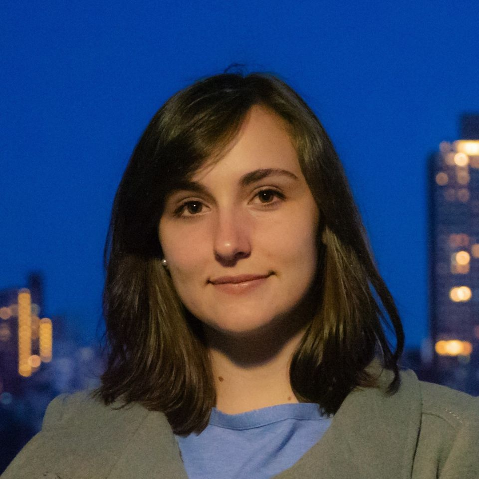

Georgia E. Smits
About Me
I am currently a postdoctoral scholar researching anomaly detection under Tyler H. McCormick in the Department of Statistics at the University of Washington.
I received my PhD in Statistics from Cornell University in December of 2025. I was advised by Professor David S. Matteson with additional mentorship from my committee members Professor Sumanta Basu and Professor Martin T. Wells. My work focused on developing Bayesian and machine learning methods for complex, noisy time series data.
Research Interests
Time Series: Changepoint detection, Bayesian trend filtering, Stochastic processes, Time series classification, Rashomon sets
Machine Learning: Algorithmic bias reduction, Synthetic data generation, Model compression techniques
Education
PhD in Statistics, Cornell University
MS in Statistics, Cornell University
BS in Physics (Intensive), Yale University